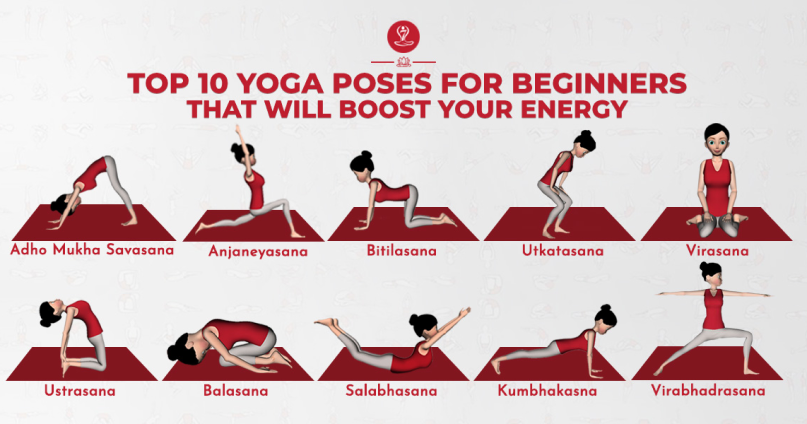

Yoga:
1. Become a mindful eater
Mindfulness refers to focusing your attention on what you are experiencing in the present moment without judging yourself.
Practicing yoga has been shown to increase mindfulness not just in class, but in other areas of a person's life.
Researchers describe mindful eating as a nonjudgmental awareness of the physical and emotional sensations associated with eating. They developed a questionnaire to measure mindful eating using these behaviors:
- Eating even when full (disinhibition)
- Being aware of how food looks, tastes and smells
- Eating in response to environmental cues, such as the sight or smell of food
- Eating when sad or stressed (emotional eating)
- Eating when distracted by other things
The researchers found that people who practiced yoga were more mindful eaters according to their scores. Both years of yoga practice and number of minutes of practice per week were associated with better mindful eating scores. Practicing yoga helps you be more aware how your body feels. This heightened awareness can carry over to mealtime as you savor each bite or sip, and note how food smells, tastes and feels in your mouth.
2. A boost to weight loss and maintenance
People who practice yoga and are mindful eaters are more in tune with their bodies. They may be more sensitive to hunger cues and feelings of fullness.
Researchers found that people who practiced yoga for at least 30 minutes once a week for at least four years, gained less weight during middle adulthood. People who were overweight actually lost weight. Overall, those who practiced yoga had lower body mass indexes (BMIs) compared with those who did not practice yoga. Researchers attributed this to mindfulness. Mindful eating can lead to a more positive relationship with food and eating.
3. Enhancing fitness
Yoga is known for its ability to soothe tension and anxiety in the mind and body. But it can also have an impact on a person's exercise capacity.
Researchers studied a small group of sedentary individuals who had not practiced yoga before. After eight weeks of practicing yoga at least twice a week for a total of 180 minutes, participants had greater muscle strength and endurance, flexibility and cardio-respiratory fitness.
4. Cardiovascular benefits
Several small studies have found yoga to have a positive effect on cardiovascular risk factors: It helped lower blood pressure in people who have hypertension. It's likely that the yoga restores "baroreceptor sensitivity." This helps the body senses imbalances in blood pressure and maintain balance.
Another study found that practicing yoga improved lipid profiles in healthy patients as well as patients with known coronary artery disease. It also lowered excessive blood sugar levels in people with non-insulin dependent diabetes and reduced their need for medications. Yoga is now being included in many cardiac rehabilitation programs due to its cardiovascular and stress-relieving benefits.
Researchers are also studying if yoga can help people with depression and arthritis, and improve survival from cancer.
5. A better body image
Yoga develops inner awareness. It focuses your attention on your body's abilities at the present moment. It helps develop breath and strength of mind and body. It's not about physical appearance.
Yoga studios typically don't have mirrors. This is so people can focus their awareness inward rather than how a pose — or the people around them — looks. Surveys have found that those who practiced yoga were more aware of their bodies than people who didn't practice yoga. They were also more satisfied with and less critical of their bodies. For these reasons, yoga has become an integral part in the treatment of eating disorders and programs that promote positive body image and self-esteem.
Extra Information at Origonal Post: www.health.harvard.edu
Benefits of Exercising:
The path to success can sometimes be a difficult one. College students have packed schedules. Classes, employment, and family or social obligations tend to take over calendars quickly; however, just as it’s important to set aside time for rest, it’s also important to exercise. Scientific studies show that regular exercise provides students with important cognitive benefits that could have positive effects on their scholarly efforts. Read more below to find out 4 reasons students should make time to exercise:
1. Heightened Focus
New “challenges,” such as physical activity, social opportunities, and increased learning can stimulate the production of new cells in the brain. A combination of all of those things can improve concentration, help keep the mind focused, and ultimately, boost work productivity and academic success in students. Research out of Michigan State University (MSU) found a link between exercise and higher GPAs in college students. Researchers also found that students who had gym memberships were less likely to drop out of school.
2. Elevated Mood /Lower Stress
Being an online student isn’t easy. Planning and studying require prioritization and overcoming self-doubt. Data by the Harvard School of Public Health Study of College Health Behaviors concluded that frequent physical activity had significant effects on students’ mood, stress levels, and social interactions. Students who were social and exercised three or more times per week reported somewhat better moods and decreased amounts of stress than those who did not. Regular exercise has been shown to help improve mood and attitude, and relieve tension and stress in students. Prolonged periods of stress have negative effects on the body and mind—exercise combats those by assisting with sleep/wake cycles, which ultimately eases anxiety, and may alleviate larger health problems down the road.
3. Increased Energy
In other studies, scientists examined the effect exercise had on the brains of mice, and learned that daily workouts replenished their brain energy stores and also gave them extra energy, particularly in the areas of the brain that have to do with cognitive thinking. It may seem counterproductive, but expending energy in exercise can actually give students the boost they need to be more proficient in their studies.
4. Sharper Memory
Exercise can increase the number of brain cells in the hippocampus, which controls the formation, retention and recall of memories – essential for students in learning. In most adults, the hippocampus starts to shrink in the late twenties, leading to memory loss over time. A study at University of Illinois, as mentioned in an article by the New York Times, showed that exercise prevents this shrinkage, and in turn, promotes regrowth. Remember the mice?